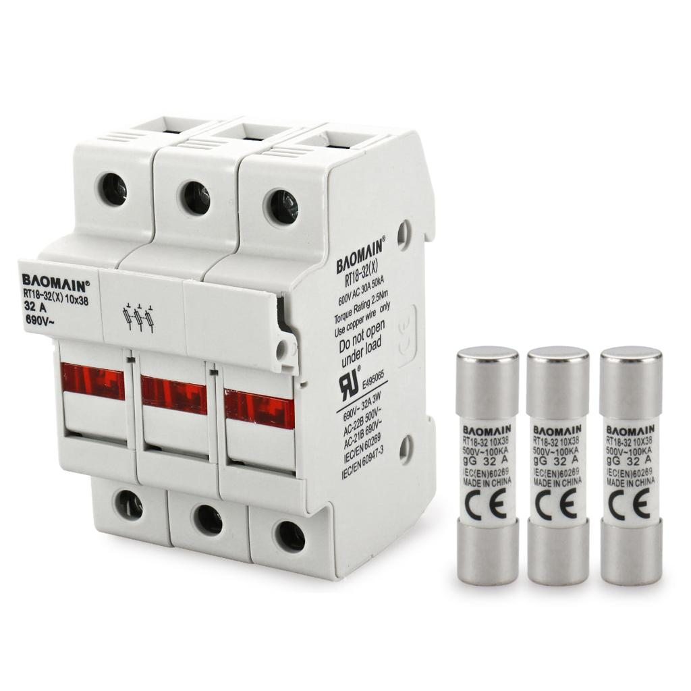
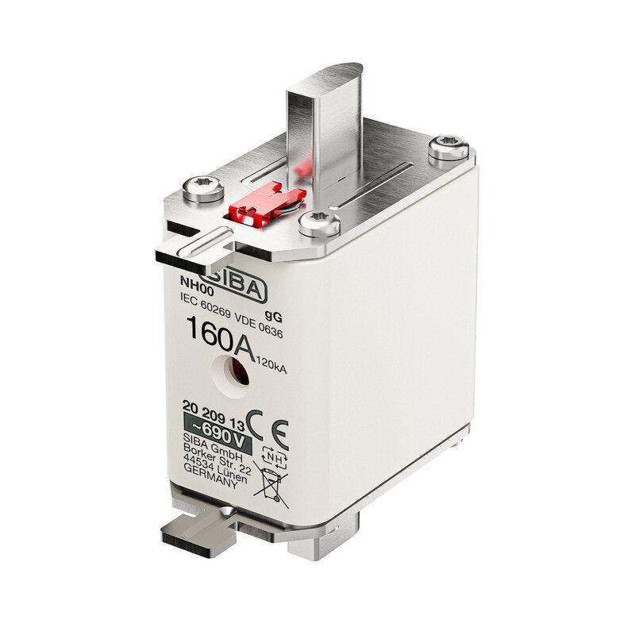
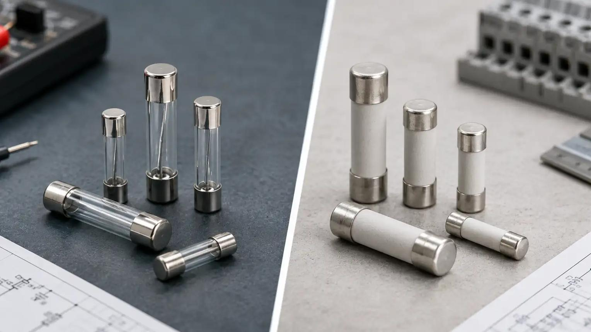
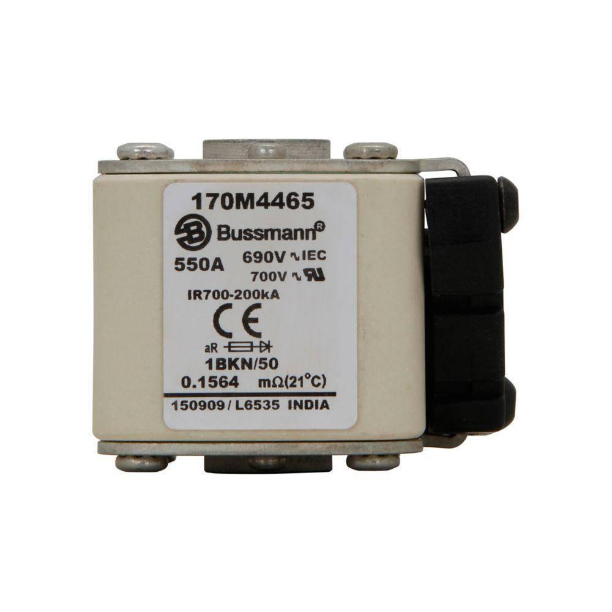
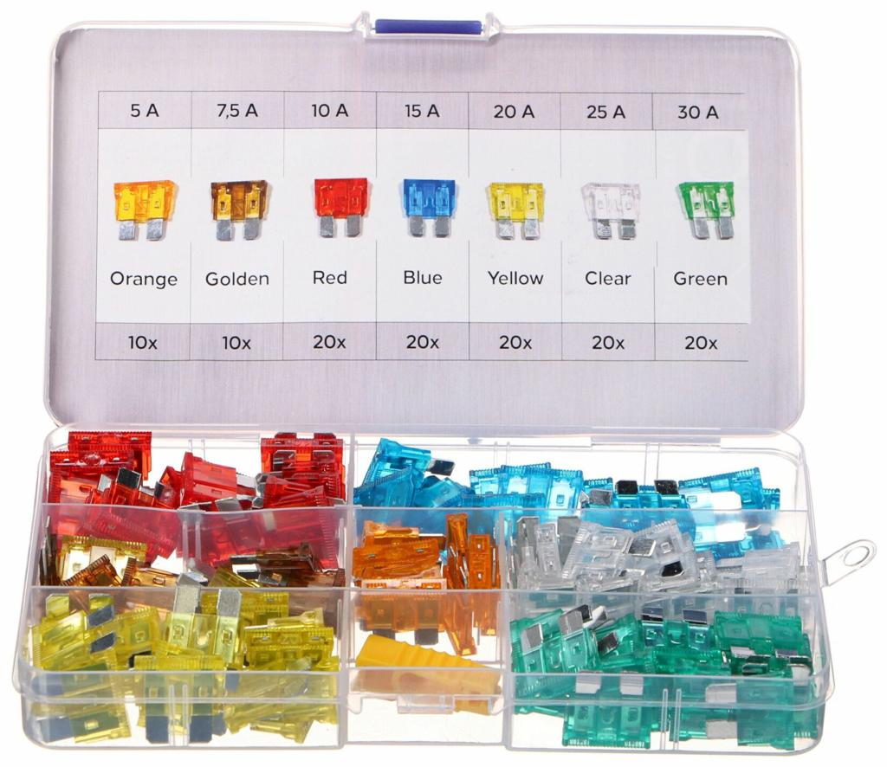

1. Purpose and role of fuses in industrial control panels
A fuse is an overcurrent protective device that interrupts an electrical circuit when current exceeds a specified level for sufficient time. It contains a calibrated fuse element that melts under excessive current and creates an open circuit.
Fuses are primarily used to protect conductors and electrical equipment against short circuits and, depending on their type and application, overloads. They are widely used in industrial control panels, PLC power supplies, control transformers, motor circuits, semiconductor equipment, and auxiliary power distribution.
The fuse is a sacrificial protective device. Once its element operates, it must be replaced after the fault has been investigated and corrected.
1.1 Why fuses are required
- Protect cables and conductors against excessive thermal energy caused by fault current.
- Limit damage to control transformers, power supplies, and other equipment during short circuits.
- Provide short-circuit protection for motor circuits when correctly coordinated with overload protection.
- Protect sensitive semiconductor devices using appropriate high-speed fuses.
- Isolate a faulty branch so that other healthy branches can continue operating when protection is properly coordinated.
- Help establish a defined protective arrangement within a control panel.
1.2 What a fuse does not necessarily protect
A fuse does not automatically protect every component against every abnormal condition.
| Condition | Does a fuse protect against it? | Explanation |
|---|---|---|
| High-current short circuit | Yes, if correctly selected | The fuse interrupts current within its specified operating capability. |
| Sustained overload | Depends on fuse type and sizing | Some fuse classes provide overload protection; others are intended primarily for short circuits. |
| Motor overload | Not necessarily | A separate overload relay or suitable electronic motor protection is normally required. |
| Earth fault | Depends on fault current and system arrangement | The fuse must receive sufficient current to operate within the required time. |
| Undervoltage | No | Use suitable voltage-monitoring or control functions. |
| Phase loss | Not reliably | Use appropriate phase-monitoring or motor-protection equipment. |
| Overtemperature | Not directly | Use thermal sensors, thermostats, or electronic protection where required. |
| PLC logic fault | No | A fuse cannot detect incorrect software logic or process sequencing. |
| Arc fault with insufficient current | Not necessarily | Some dangerous arcs may not produce enough current to operate the fuse promptly. |
2. Operating principle
A fuse element has a defined electrical resistance and thermal capacity. Current flowing through the element generates heat according to Joule's law.
Where:
- \(P\) = power dissipated as heat in watts.
- \(I\) = current through the element in amperes.
- \(R\) = electrical resistance in ohms.
As current increases, heat generation increases approximately with the square of current, assuming resistance remains constant. The element reaches its melting condition when the accumulated thermal energy becomes sufficient.
The actual operating behavior also depends on the element's material, dimensions, heat dissipation, surrounding temperature, and duration of the current.
2.1 Operating sequence
Normal current
↓
Fuse element remains intact
↓
Overcurrent occurs
↓
Element heats according to current and time
↓
Element melts
↓
An arc may form across the opening
↓
Fuse construction extinguishes the arc
↓
Circuit current is interrupted
The arc-extinguishing stage is critical. Melting the element does not instantly guarantee that current has stopped. The fuse must safely interrupt the arc at the voltage and prospective fault current for which it is rated.
2.2 Why a fuse may not blow immediately
A fuse responds to both current magnitude and duration.
For example, a current moderately above its rated value may take a considerable time to melt the element, while a severe short circuit can cause rapid operation.
A fuse therefore does not behave like an ideal switch that opens whenever current crosses one fixed threshold.
3. Main fuse construction
Common components of a cartridge fuse include:
- Fuse body: Provides electrical insulation and mechanical protection.
- Fuse element: Calibrated metal element designed to melt under defined conditions.
- End caps or terminals: Provide electrical connection.
- Arc-quenching material: Often silica-based material in suitable cartridge fuses, used to help extinguish the arc.
- Indicator or striker: Available in some designs to indicate operation or initiate a compatible mechanism.
- Fuse holder: Holds the fuse securely and provides connection to the circuit.
The construction varies by fuse type. A high-speed semiconductor fuse, a miniature glass fuse, and an industrial NH fuse should not be assumed to have equivalent arc-interruption performance.
4. Fuse terminology and ratings
Understanding the label is essential before installing or replacing a fuse.
| Parameter | Meaning | Practical significance |
|---|---|---|
| Rated current | Current rating assigned under specified conditions | Used as part of the selection process; it is not an instantaneous trip threshold. |
| Rated voltage | Maximum voltage rating under specified conditions | Must be suitable for the circuit voltage and type. |
| Breaking capacity | Maximum prospective fault current the fuse can safely interrupt at specified conditions | Must be adequate for the available fault current. |
| Time-current characteristic | Relationship between current magnitude and operating time | Determines how quickly the fuse operates during overloads and short circuits. |
| Pre-arcing time | Time until the fuse element melts | Does not include the complete arc-interruption period. |
| Total clearing time | Time from fault-current initiation until current interruption | Includes pre-arcing and arcing time. |
| Pre-arcing \(I^2t\) | Integral of squared current over the pre-arcing interval | Useful for thermal coordination. |
| Total clearing \(I^2t\) | Integral of squared current over the complete clearing interval | Important for evaluating energy let-through during a fault. |
| Utilization category | Defines the intended protection behavior and application | Helps distinguish general-purpose, motor, and semiconductor fuses. |
| Ambient temperature | Temperature around the fuse and holder | Can affect permissible loading and operating behavior. |
| Physical size | Standardized or manufacturer-specific dimensions | Determines compatibility with the holder and available installation space. |
A fuse with a higher current rating is not automatically a better replacement. It may allow conductors or components to experience dangerous thermal stress before the fuse operates.
5. Fuse types used in industrial applications

5.1 Cylindrical cartridge fuses
Common in control panels, auxiliary circuits, and equipment power distribution. Available in different diameters, lengths, voltage ratings, and utilization categories. The physical size alone does not establish its breaking capacity or protection behavior.

5.2 NH or blade-contact industrial fuses
Used in industrial power distribution and higher-current circuits. Their blade contacts and standardized sizes support suitable fuse bases or switch-disconnectors. Installation and replacement require the correct handling equipment and safety procedure.

5.3 Glass and miniature ceramic fuses
Found in electronic equipment, small power supplies, instrumentation, and auxiliary circuits. Glass-bodied types may have lower breaking capacity than suitable ceramic types, but actual performance must be confirmed from the datasheet.

5.4 High-speed semiconductor fuses
Designed to limit fault energy and protect semiconductor devices such as thyristors, diodes, and some power-electronic assemblies. Selection requires coordination with the semiconductor's permitted \(I^2t\), peak current, and manufacturer's protection requirements.

5.5 Automotive blade fuses
Used in vehicle electrical systems and some low-voltage auxiliary applications. Their voltage, current, and interrupting capabilities must match the actual circuit. Automotive fuses should not be substituted into industrial circuits merely because their current rating appears suitable.
Other designs include plug fuses, bolted fuses, fuse links integrated into disconnectors, and specialized DC fuses.
6. Fuse utilization categories
The utilization category describes the intended application and protection range. It is more informative than simply identifying a fuse as a fast or slow type.
Common IEC fuse categories include the following. Confirm the applicable standard edition and the manufacturer's product designation before selecting a specific fuse.
| Category | General meaning | Typical application |
|---|---|---|
| gG | Full-range general-purpose fuse for cable and general circuit protection | Distribution circuits and conductor protection |
| gL | Older designation associated with general line protection; largely superseded by gG in modern practice | Legacy installations and documentation |
| aM | Partial-range motor-circuit fuse, primarily for short-circuit protection | Motor branch circuits with separate overload protection |
| gR | Full-range fuse category used for semiconductor protection | Suitable power-electronic protection applications |
| aR | Partial-range semiconductor fuse, primarily for short-circuit protection | Semiconductor circuits with coordinated additional protection |
6.1 Full-range versus partial-range protection
A full-range fuse is designed to interrupt currents from specified low overcurrents through its rated breaking capability under its declared operating conditions.
A partial-range fuse is designed to interrupt currents within a specified higher-current range. It may not provide overload protection by itself.
For example, an aM motor fuse must be paired with an appropriate overload-protection device because the fuse alone is not intended to cover the entire motor-overload range.
Do not assume that every fuse described as “fast,” “slow,” or “motor-rated” corresponds to one specific IEC utilization category. Use the actual category and manufacturer's time-current data.
7. AC and DC fuse selection
AC and DC interruption are not interchangeable by assumption.
In AC circuits, current naturally passes through zero periodically. This can assist arc extinction, although successful interruption still depends on the fuse design and circuit conditions.
In DC circuits, current does not naturally cross zero during normal steady operation. The fuse must be suitable for interrupting the DC arc at the specified voltage and prospective fault current.
Important considerations include:
- Use a fuse explicitly rated for the applicable AC or DC circuit.
- Check the circuit voltage, including any relevant transient or switching conditions.
- Confirm the breaking capacity at the actual circuit voltage.
- Consider the system grounding arrangement and likely fault-current paths.
- Follow any specified polarity or installation direction.
- For batteries and DC-link circuits, consider the high prospective fault current and stored energy.
- Do not assume an AC fuse is safe on a DC circuit simply because its current and voltage labels appear close to the application requirements.
8. Time-current characteristics
A time-current curve shows how long a fuse takes to operate at different multiples of its rated current.
The horizontal axis generally represents current, often as a multiple of rated current. The vertical axis represents operating time, typically on a logarithmic scale.
For illustration, a fuse may tolerate a brief starting current but open under a sustained overload. The exact result depends on the fuse's curve and tolerances.
8.1 Why curves matter
Time-current curves are used to:
- Check whether a fuse will tolerate normal inrush current.
- Verify that a fault will be cleared within the required time.
- Coordinate an upstream fuse with downstream protective devices.
- Assess whether a motor can start without nuisance fuse operation.
- Check whether a fuse will protect a conductor within its thermal withstand limits.
8.2 Reading a time-current curve
- Identify the correct fuse part number and characteristic.
- Determine the expected current during normal operation and startup.
- Find the corresponding current on the curve's horizontal axis.
- Read the expected operating-time range.
- Compare it with the permitted starting duration or required fault-clearing time.
- Account for the manufacturer's stated tolerance bands and installation conditions.
A generic curve from another fuse family is not an acceptable substitute for the correct datasheet.
9. Fuse sizing and selection
Fuse selection must consider the load, conductors, equipment limits, fault current, and coordination with other protective devices.
9.1 Key selection inputs
- Normal load current.
- Maximum continuous current allowed by the equipment and conductor.
- Startup or inrush current magnitude and duration.
- AC or DC supply and circuit voltage.
- Available prospective short-circuit current.
- Required breaking capacity.
- Fuse utilization category.
- Fuse holder and terminal ratings.
- Ambient temperature and manufacturer derating factors.
- Downstream equipment withstand capability.
- Applicable electrical standards and local requirements.
- Coordination with upstream and downstream protective devices.
9.2 Basic current calculation
For a single-phase load with real power \(P\), RMS voltage \(V\), and power factor \(PF\):
For a balanced three-phase load:
If \(P\) is electrical input power, these equations estimate line current under the stated assumptions. If the given power is mechanical output power, efficiency must also be included.
For a balanced three-phase motor:
Where:
- \(P\) = electrical input power in watts for the first two equations.
- \(P\_{\text{out}}\) = mechanical output power in watts for the motor equation.
- \(V\) = single-phase supply voltage.
- \(V\_{LL}\) = line-to-line voltage.
- \(PF\) = power factor.
- \(\eta\) = motor efficiency expressed as a decimal.
These equations estimate operating current; they do not independently determine the correct fuse rating.
9.3 Example: selecting a fuse for a 24 VDC power supply branch
Assume a branch supplies a 24 VDC load that normally draws 2.0 A. Startup current reaches 4.5 A for 100 ms. The connected equipment and conductors have documented protection limits.
A disciplined selection process is:
- Confirm the load's normal current and maximum permitted inrush.
- Check the candidate fuse's time-current curve to determine whether it can tolerate the 100 ms startup event.
- Verify that the fuse provides suitable protection for the branch conductor and connected equipment.
- Check the fuse's DC voltage rating and breaking capacity against the available fault current.
- Verify compatibility with the fuse holder and terminal ratings.
- Check coordination with the upstream 24 VDC power supply protection and other branch fuses.
- Confirm the final selection against the equipment and fuse manufacturers' recommendations.
A 2 A load does not automatically require a 2 A fuse. A fuse selected only from the steady-state current can nuisance-open during startup, while an oversized fuse can fail to protect the branch.
9.4 Fuse versus conductor sizing
The fuse must be coordinated with the conductor's permissible current and short-circuit withstand. The conductor's current-carrying capacity depends on factors such as cross-sectional area, insulation temperature rating, installation method, grouping, and ambient temperature.
A fuse with a rating greater than the conductor can safely withstand may leave the conductor inadequately protected. Conversely, a fuse that is too small may interrupt normal load or startup current unnecessarily.
Use the applicable code, conductor data, and manufacturer's coordination information rather than a universal fuse-to-cable ratio.
10. Short-circuit current and breaking capacity
A short circuit can produce current many times greater than the normal load current. The prospective short-circuit current is the current that would flow at the fault location if the protective device did not limit or interrupt it.
The fuse must have an adequate rated breaking capacity for the actual fault conditions.
For example, a circuit may normally draw only 3 A while the available fault current is several kiloamperes. The operating load current does not determine the required breaking capacity.
10.1 Key distinctions
- Rated current concerns the fuse's current rating under specified conditions.
- Breaking capacity concerns the maximum fault current the fuse can safely interrupt under specified conditions.
- Current-limiting performance concerns how much current and energy pass through during interruption.
- Clearing time concerns how long the fault current persists before interruption.
A high breaking-capacity fuse is not necessarily a current-limiting fuse with the exact energy-limiting behavior required by a semiconductor or other sensitive load. Check both the breaking capacity and the current-limiting data where relevant.
11. Fuse \(I^2t\) and let-through energy
The \(I^2t\) value describes the integral of squared current over time:
It is commonly expressed in ampere-squared seconds, or A²s.
For an approximately constant current over a short interval:
The approximation is only appropriate when the current can reasonably be treated as constant during that interval.
11.1 Why \(I^2t\) matters
During a short circuit, a fuse limits the energy that reaches the downstream circuit by melting and interrupting current. Its total clearing \(I^2t\) is useful when comparing the fuse's let-through energy with the withstand limits of protected conductors or equipment.
For semiconductor protection, the fuse's total clearing \(I^2t\) must be evaluated against the protected device's permitted withstand values and the manufacturer's application requirements. Peak let-through current may also be important.
Do not compare values without checking whether both figures refer to pre-arcing or total clearing conditions and whether the voltage and fault conditions are applicable.
12. Motor-circuit fuse protection
Motors draw starting current above their normal running current. Depending on the motor and starting method, the magnitude and duration of this current can be substantial.
The protective design must distinguish between motor starting, sustained overload, and short circuit.
A common arrangement is:
Three-phase supply
↓
Fuse or fuse-switch protection
↓
Contactor
↓
Overload relay or suitable electronic motor protection
↓
Motor
The exact arrangement depends on the motor starter design and applicable standards.
12.1 Role of each device
- Fuse: Provides short-circuit protection and, for an appropriate fuse category, additional overload protection.
- Contactor: Switches the motor during normal control operation. It is not generally intended to interrupt every severe short circuit.
- Overload relay: Detects sustained motor overload and trips the motor control circuit.
- Motor protection circuit breaker or equivalent device: May combine multiple protective functions when appropriately selected and coordinated.
12.2 Common motor-fuse mistakes
- Using an aM fuse without separate overload protection.
- Selecting a fuse solely from the motor's nameplate current.
- Ignoring starting current and acceleration time.
- Installing a higher-rated fuse because the original opens during startup.
- Failing to verify coordination between the fuse, contactor, overload relay, and motor.
- Assuming that a motor branch's short-circuit protection also protects the motor from every overload or phase-loss condition.
13. Fuse protection for PLCs and 24 VDC control systems
Industrial control panels often distribute 24 VDC to PLCs, remote I/O, sensors, communication devices, relays, and other field equipment.
Separate branch protection helps prevent a short circuit in one device or cable from disabling the entire control system. However, the protection must be compatible with the power supply's current-limit behavior and the fault-current characteristics of the DC distribution system.
13.1 Example architecture
230 VAC or other suitable supply
↓
24 VDC power supply
↓
Protected DC distribution
├── PLC and controller branch
├── Remote I/O branch
├── Sensor branch
├── Communication equipment branch
└── Relay and solenoid branch
Each branch may need a fuse or another suitable protective device, depending on the design and equipment requirements.
13.2 Important design considerations
- Protect each branch according to conductor and equipment requirements.
- Consider electronic power supplies that enter current limit or foldback during faults.
- Confirm that sufficient fault current is available to operate the selected fuse promptly.
- Consider electronic circuit protectors where conventional fuses cannot reliably clear faults under the available DC fault current.
- Separate high-inrush solenoid loads from sensitive controller branches where appropriate.
- Check that a branch fault does not unnecessarily collapse the complete 24 VDC supply.
- Document the fuse reference, rating, category, branch destination, and replacement part number.
A fuse cannot interrupt a fault promptly if the circuit's available current remains below the relevant operating region for too long. This is particularly important when a power supply limits its output current.
14. Fuses in VFD, servo, and semiconductor circuits
Variable-frequency drives and servo drives contain rectifiers, DC links, switching semiconductors, and other components with specific short-circuit protection requirements.
A fuse used on a drive input must be selected according to the drive manufacturer's specified protective device and installation requirements. A fuse intended for semiconductor protection may have different characteristics from a general-purpose distribution fuse.
Important checks include:
- Manufacturer-approved fuse type and rating.
- Required utilization category.
- Supply voltage and available fault current.
- Drive input current and specified upstream protection.
- Semiconductor fuse requirements, where applicable.
- Coordination with contactors, disconnectors, and other protective equipment.
- Installation conditions and applicable short-circuit current rating.
Never select a drive fuse only from the motor's rated current. The drive's input characteristics, semiconductor protection requirements, and manufacturer instructions are also relevant.
15. Fuse holders and fuse disconnectors
The fuse and its holder form an assembly that must be suitable for the application.
15.1 Important holder characteristics
- Compatible fuse size and contact arrangement.
- Rated current and voltage.
- Suitable AC or DC application rating.
- Terminal conductor range.
- Required breaking or switching capability, where applicable.
- Touch protection and enclosure requirements.
- Heat dissipation and ambient-temperature limitations.
- Mounting orientation and installation clearances.
- Compatibility with the panel's short-circuit rating.
A fuse holder is not automatically a load-break switch. Removing or inserting a fuse under load is permitted only when the equipment is specifically designed and rated for that operation and the procedure allows it.
15.2 Contact resistance and overheating
Loose terminals, contamination, damaged clips, or poor contact pressure can create localized heating.
The approximate heat generated at a resistive contact is:
Even when the current is within the fuse's normal operating range, a poor connection can overheat the holder or terminal.
Inspect for discoloration, melted plastic, degraded insulation, pitting, corrosion, and evidence of overheating. Replace damaged components with approved equivalents and correct the underlying connection problem.
16. Fuse coordination and selectivity
Coordination is the process of ensuring protective devices operate in a suitable order under specified fault conditions.
Selectivity, or discrimination, aims to make the protective device closest to a fault operate without unnecessarily tripping upstream devices.
For example, a fault in a sensor branch should ideally open that branch's protective device rather than disconnect the entire control panel.
16.1 Basic coordination concept
Upstream supply protection
↓
Panel distribution protection
↓
Branch protection
↓
Cable and connected equipment
The downstream device should generally clear a branch fault before the upstream device operates, where selectivity is required and achievable.
16.2 How coordination is verified
- Identify the upstream and downstream protective devices.
- Obtain their time-current curves and relevant let-through data.
- Compare operating characteristics across the expected fault-current range.
- Verify the manufacturer's selectivity or coordination tables where available.
- Check the available fault current and equipment short-circuit ratings.
- Document any limits where full selectivity is not guaranteed.
Simply selecting a downstream fuse with a lower current rating does not guarantee selectivity. Fuse characteristics, fault current, and the behavior of the upstream device all matter.
17. Safety when handling fuses
A blown fuse may indicate a serious fault, and a fuse holder can remain energized even when the load is switched off.
Before inspecting or replacing a fuse:
- Follow the site's electrical safety procedure and permit requirements.
- Isolate the relevant supply and apply lockout/tagout as required.
- Verify absence of voltage using an approved tester and the prescribed verification method.
- Consider alternate supplies, backfeeds, UPS systems, batteries, and stored energy.
- Allow capacitors and DC links to discharge according to the manufacturer's specified waiting time.
- Use appropriate PPE and tools based on the hazard assessment.
- Use suitable fuse-handling equipment for industrial fuse sizes.
- Never bypass a fuse with wire, foil, or an improvised conductor.
- Never replace a fuse with a higher rating merely to stop repeated operation.
- Reinstall covers and barriers before returning equipment to service.
A fuse should not be removed from an energized holder unless the equipment and approved work procedure specifically permit the operation. An open control circuit is not proof that the supply is isolated.
18. Troubleshooting a blown fuse
Repeated fuse operation is evidence of an unresolved electrical condition. Replacing the fuse without identifying the cause is not a troubleshooting strategy.
18.1 Common causes
| Symptom | Possible causes | Investigation |
|---|---|---|
| Fuse opens immediately after energization | Short circuit, wiring error, failed component | Isolate power and inspect the branch systematically. |
| Fuse opens after several minutes | Overload, overheating, incorrect rating, poor connection | Measure load current and inspect terminals and installation conditions. |
| Fuse opens during motor startup | Incorrect fuse characteristic, excessive starting current, mechanical load issue | Compare starting current and duration with the fuse curve. |
| Fuse opens when a solenoid activates | Coil fault, wiring short, inrush, suppression-device failure | Inspect the coil and wiring and compare current with specifications. |
| Fuse holder becomes hot | Loose contact, undersized holder, excessive loading | Inspect the holder, terminal condition, current, and temperature limits. |
| One 24 VDC branch repeatedly fails | Cable damage, failed sensor, solenoid short, polarity or wiring error | Disconnect loads systematically and test the branch safely. |
| Fuse opens after maintenance | Incorrect wiring, trapped cable, misplaced conductor, wrong replacement fuse | Verify wiring against the drawings and check the installed fuse specification. |
| Semiconductor fuse opens repeatedly | Drive or rectifier fault, incorrect fuse selection, excessive fault energy | Follow the drive manufacturer's diagnostic procedure and verify fuse coordination. |
18.2 Systematic diagnostic procedure
- Record the fuse reference, part number, current rating, voltage rating, and utilization category.
- Establish when the fuse operates: immediately, during startup, under load, or after a delay.
- Isolate the circuit safely and inspect for damaged insulation, loose conductors, contamination, and visible component damage.
- Check the circuit against the schematic and verify recent modifications.
- Disconnect or isolate downstream loads using the approved procedure.
- Test the isolated branch and components using suitable methods and instruments.
- Measure normal and startup current after the circuit is safe to energize.
- Verify that the fuse's time-current characteristic and breaking capacity are appropriate.
- Correct the root cause, install the specified replacement fuse, and perform a controlled functional test.
- Record the fault, corrective action, replaced part, and final test result.
Never measure resistance on an energized circuit. Insulation-resistance testing must be performed only after sensitive electronic equipment has been disconnected or protected according to the equipment manufacturer's instructions.
18.3 Root-cause example
A 24 VDC sensor branch repeatedly opens its fuse when the machine begins a new cycle.
A disciplined investigation finds that a cable near a moving fixture has damaged insulation. During fixture movement, the conductor contacts the machine frame, creating an intermittent short circuit.
The correct corrective action is to repair or replace the damaged cable, restore appropriate routing and mechanical protection, inspect adjacent wiring, and verify branch current and protective-device operation.
Installing a larger fuse would not solve the problem. It would simply allow more fault energy into the damaged cable.
19. Commissioning and inspection checklist
19.1 Design verification
- Fuse current rating is appropriate for the load and conductor.
- Fuse voltage rating is suitable for the circuit.
- Breaking capacity is adequate for the prospective fault current.
- Utilization category matches the application.
- Startup and inrush current have been considered.
- Fuse coordination has been checked where required.
- Fuse holder and terminals have suitable ratings.
- Equipment manufacturer requirements have been followed.
- DC application suitability has been verified where applicable.
19.2 Installation verification
- Correct fuse is installed in the correct holder.
- Fuse clips and contacts are clean and undamaged.
- Terminations are tightened to specified torque.
- Conductors are correctly identified and routed.
- Required covers and touch barriers are installed.
- Fuse schedule and electrical drawings are updated.
- Spare fuses are available with correct part numbers and ratings.
19.3 Functional verification
- Normal operating current is within the design limits.
- Startup behavior is acceptable.
- Protective-device operation has been verified using an approved test method.
- Downstream equipment operates correctly.
- No abnormal heating, smell, discoloration, or vibration is present.
- The circuit has been returned to service under the required procedure.
Do not intentionally create a live short circuit to prove that a fuse works. Use an approved test method and the equipment manufacturer's guidance.
20. Fuse schedules and maintenance documentation
A useful fuse schedule should identify the protective device unambiguously.
| Field | Example |
|---|---|
| Fuse tag | F24-03 |
| Panel reference | CP-01 |
| Circuit destination | Remote I/O supply |
| Fuse type | Cylindrical cartridge |
| Utilization category | gG |
| Rated current | 4 A |
| Rated voltage | As specified for the circuit |
| AC/DC suitability | DC-rated for the application |
| Breaking capacity | As specified by the selected part |
| Fuse holder | Matching approved holder |
| Manufacturer part number | Exact ordering code |
| Drawing reference | Electrical schematic page and circuit |
| Spare location | Identified maintenance store location |
| Replacement history | Date, fault, and corrective action |
The values shown in the example are illustrative only. The actual schedule must use the installed equipment's verified specifications.
For a maintenance system, record the exact part number rather than only “4 A fuse.” Two fuses with the same current rating may have different dimensions, voltage ratings, breaking capacities, utilization categories, and time-current characteristics.
Useful maintenance indicators include repeated fuse failures by circuit, equipment, and time; frequency of replacement; and whether failures follow a recent modification or maintenance activity.
21. Common selection mistakes
- Selecting a fuse only by current rating.
- Ignoring rated voltage or DC interruption requirements.
- Using a fuse with inadequate breaking capacity.
- Confusing gG and aM applications.
- Using a general-purpose fuse where semiconductor protection is required.
- Assuming a fuse protects a motor from every overload condition.
- Ignoring startup current and time-current curves.
- Failing to coordinate the fuse with the conductor and connected equipment.
- Using an incompatible fuse holder.
- Replacing a fuse with a higher-rated part without design verification.
- Repeatedly replacing blown fuses without investigating the fault.
- Assuming that a fuse opening proves the circuit is electrically safe.
- Failing to update the electrical drawing and fuse schedule after modifications.
22. Practical interview questions and answers
Q1. What is the main purpose of a fuse?
A fuse interrupts excessive current to protect a circuit and its components against damaging thermal and electrical effects.
Q2. Why does a fuse operate faster at higher fault current?
Higher current produces greater heating in the element. Under comparable conditions, the energy required to melt the element accumulates more quickly, although the exact behavior depends on the fuse characteristic.
Q3. What is breaking capacity?
It is the maximum prospective fault current that a fuse can safely interrupt under its specified conditions.
Q4. What is the difference between gG and aM fuses?
A gG fuse is a full-range general-purpose fuse commonly used for conductor and distribution protection. An aM fuse is a partial-range motor-circuit fuse intended primarily for short-circuit protection and normally requires separate overload protection.
Q5. Why is a fuse not always sufficient for motor overload protection?
Motor starting and sustained overload behavior require different protection characteristics. A suitably coordinated overload relay or equivalent motor-protection device is normally used to detect sustained overload conditions.
Q6. Why should a DC-rated fuse be used in a DC circuit?
DC current does not naturally pass through zero periodically, so interrupting the arc can be more difficult. The fuse must be rated for the DC voltage and fault conditions.
Q7. What does \(I^2t\) mean in fuse selection?
It represents the integral of squared current over time and is useful for evaluating thermal energy let-through during fault interruption.
Q8. Why can a fuse open during startup even when normal running current is acceptable?
The startup current magnitude and duration may fall within the fuse's operating region. The fuse's time-current characteristic must accommodate normal inrush while still providing adequate fault protection.
Q9. Why is a higher-rated replacement fuse dangerous?
It may permit excessive current to flow through a conductor or component before interruption, creating overheating, equipment damage, or fire risk.
Q10. What should be checked when a fuse repeatedly blows?
Investigate short circuits, overloads, inrush current, damaged cables, faulty loads, loose connections, incorrect fuse characteristics, and inadequate coordination. Correct the cause before replacing the fuse.
Q11. What is selectivity between protective devices?
Selectivity means that the protective device closest to a fault operates without unnecessarily interrupting healthy upstream circuits, within the conditions for which coordination has been verified.
Q12. Can a fuse holder be treated as an isolator?
Not automatically. Isolation capability depends on the equipment's design, ratings, and applicable procedure. A fuse holder alone should not be assumed to provide safe isolation.
Q13. Why are high-speed fuses used in power electronics?
They are designed to limit fault duration and energy let-through so that suitable semiconductor devices have a better chance of surviving a fault, subject to verified coordination.
Q14. What information should be recorded after a fuse failure?
Record the fuse identification and part number, failure circumstances, suspected and confirmed root cause, corrective action, replacement part, and functional test result.
Q15. How can nuisance fuse operation be reduced without compromising safety?
Measure the actual load and startup current, verify the fuse characteristic, check installation temperature and contact condition, and coordinate the fuse with the equipment. Change the rating or type only after confirming the complete protection design.
23. Final engineering principles
A correctly selected fuse is part of a coordinated protection system, not an isolated component. Its effectiveness depends on its current and voltage ratings, breaking capacity, operating characteristic, utilization category, conductor protection, and relationship with upstream and downstream devices.
In industrial maintenance, the objective is not merely to replace a failed fuse and restart the machine. The objective is to identify why the fuse operated, confirm that the protective arrangement is correct, remove the root cause, and restore the equipment with documented evidence that the circuit is safe and functional.
NEXT TOPIC
02_PLAN_WISE_2026\02_INDUSTRY3_0\05_Cabinet_Eng\08_Circuit_Breakers - Circuit breakers